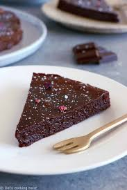

This is my Recipe Page!
This is a page to show my favourite recipes.

Chocolate Chip Cookies
Ingredients
- 2 1/4 cup Flour
- 1 tsp Salt
- 1 tsp Baking Powder
- 1/2 tsp Constarch
- 3/4 cup Brown Sugar
- 1/3 cup White Sugar
- 3/4 cup Butter, Room Temperature
- 1 tsp Vanilla Extract
- 2 cups Chocolate Chips
Instructions
- First set the oven to 350 degrees F. Line a baking tray with parchment paper and put to the side.
- Mix flour with baking powder, cornstarch and salt.
- In a separate bowl, mix together the butter and sugar.
- In the bowl with the butter and sugar, add eggs and vanilla extract.
- Slowly mix the dry ingredients in with the wet ingredients.
- Add in the chocolate chips.
- Form the dough into 1.5 in balls spread apart on the baking tray.
- Put in oven and let bake for 13-15 minutes.
- Let cool and enjoy!

Dark Chocolate Fodant Cake
Ingredients
- 200g Dark Chocolate 70% cocoa
- 1/2 cup Salted Butter
- 2/3 cup Sugar
- 4 Large Eggs
- 3 tbsp flour
Instructions
- Preheat the oven to 350 degrees farenheit and grease a 9 inch pan with butter.
- In a medium saucepan melt the butter and dark chocolate.
- Turn off the heat and stur in sugar.
- Add the eggs one at a time, making sure to mix vigorously so the eggs don't cook.
- Gently mix in flour.
- Pour the batter into the pan
- Cook for 15-17 minutes
- Enjoy! This recipe is great warm or after it's cooled.